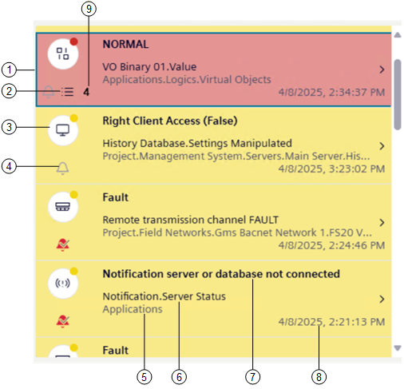
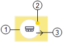

Event List
In the Events workspace, each individual row of Event List includes details about an event.

1 | Event row (the selected event row is highlighted by a border in a different color.) |
2 | If an operating procedure was configured for a specific event, this icon indicates that assisted treatment is available to handle that event. |
3 | Graphical indicator of an event (event icon) |
4 | Status of the event source:
|
5 | The entire System Browser path of the object that issued the event. |
6 | Event source, that is, the object property that issued the event. |
7 | Event cause text consisting of the description of the event followed by the condition (either numeric value or descriptive text) that caused the event. For BACnet Event Enrollment (EE) events, it also indicates that the alarm limit was violated. |
8 | Date and time when the event occurred. |
9 | Number of recurring events, if any (except for UL/ULC profiles, where events are listed individually). |
Note that:
- Depending on the Client Profile, the Event List background color may match the event category color.
- In UL/ULC profiles, if auto-logoff occurs after a period of operator inactivity, Event List will display events with highest priority on top.
Event Icon
An event row starts on the left-hand side with an event icon (graphic indicator) that summarizes some of the most important information about that event. The event icon flashes until you acknowledge its associated event.)

1 | Discipline/subdiscipline of the event source:
|
2 | Category color. The events that occur in the building control system belong to categories, which are color-coded by severity. |
3 | Out icon. In UL/ULC profiles, this icon represents the restore of the alarm condition. |